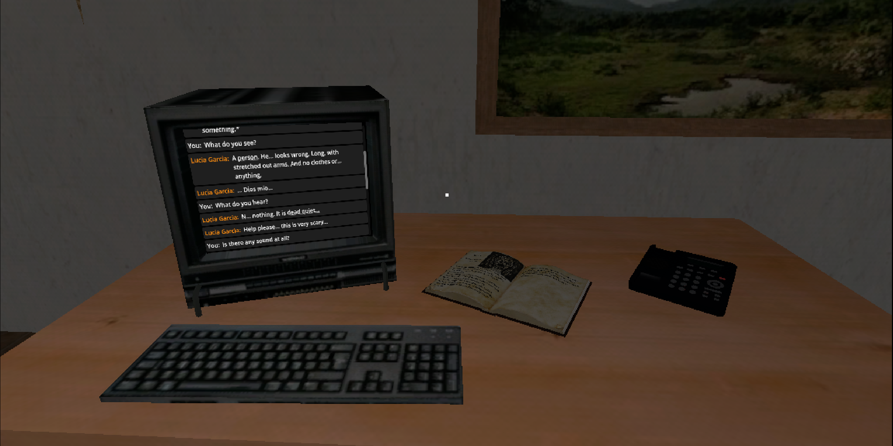
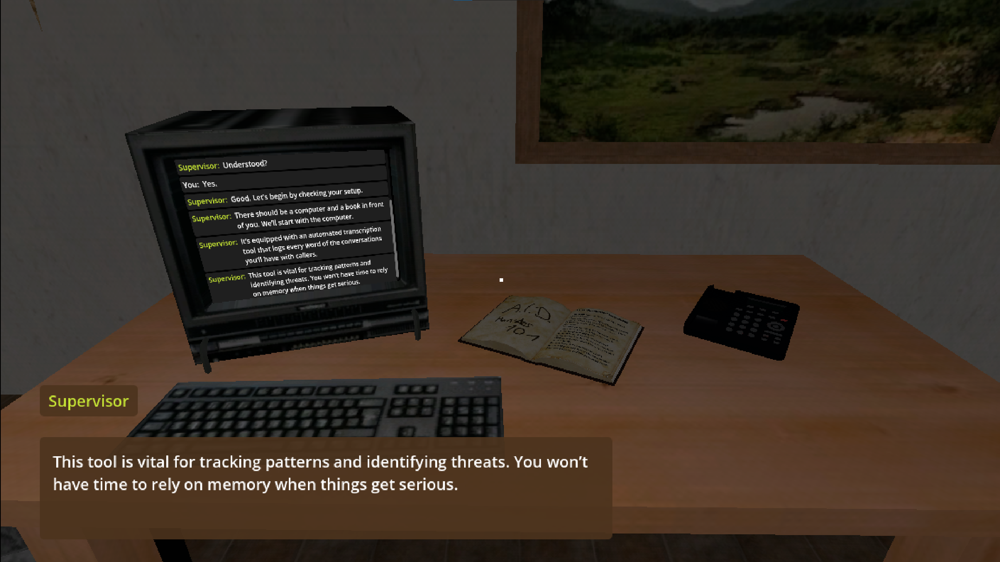
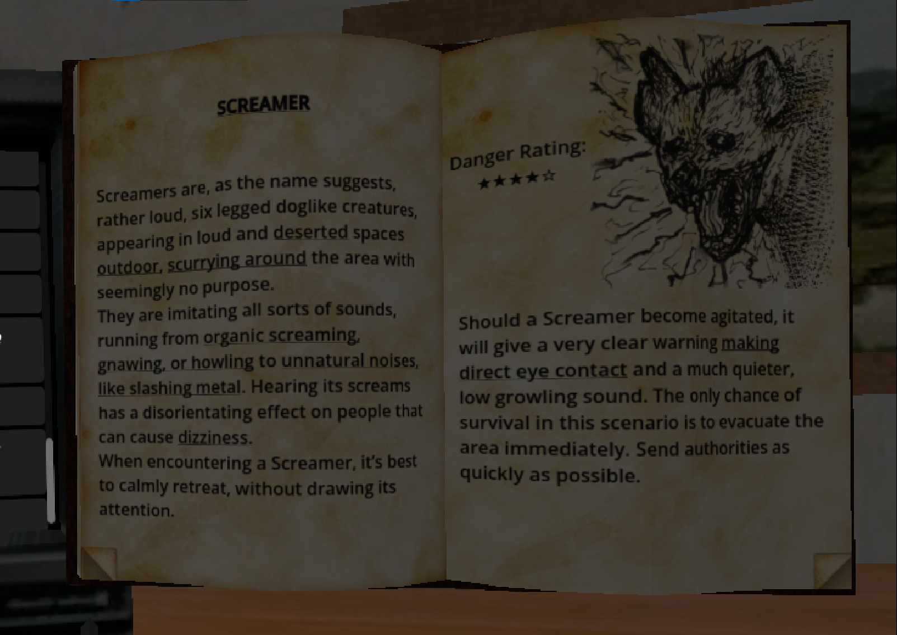
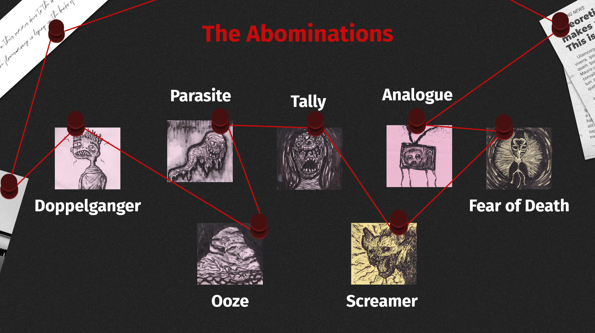
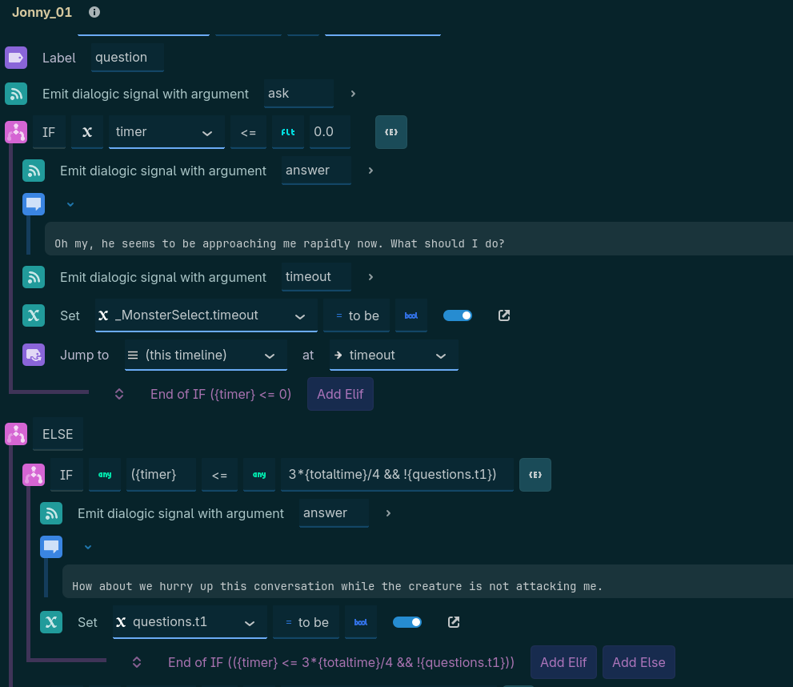
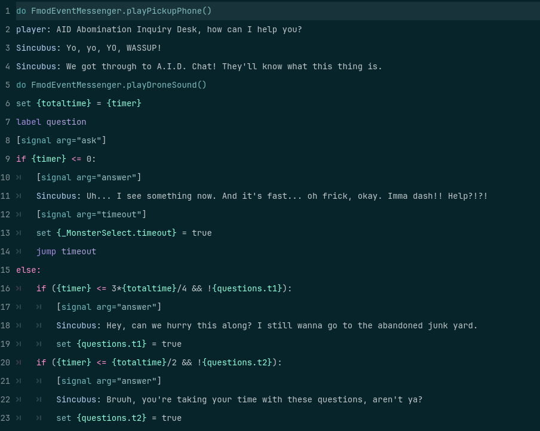
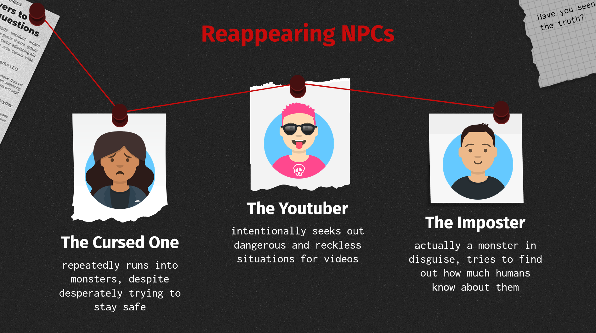

A.I.D.
In
It is an investigative game that tries to convey a gamified version of a phone operator's life.
A sense of uneasiness and pressure is instilled through the horror-setting, time pressure and not
being able to “directly” control the outcome. Making the player feel empathy towards the callers by
making them seem as human as possible is achieved through emotions in the dialogues and individual
NPCs with different personalities. The imagination of the player is active since they will never
really know exactly what is going on. Only through the dialogue do they get clues as to what might
be happening. Imagination will fill the gaps.
This game was created as part of a uni assignment, and as such only exists as a concept demo, which
currently is not available as playable demo.
Technical Aspects
During the development of our concept demo, we used different technologies and encountered multiple
situations, where we needed to learn or adapt. The game engine we decided to work with was Godot,
with the additionally use Dialogic, which is a Godot plugin, specifically for creating dialogue systems.
We decided to use Dialogic, as creating the entire dialog structure from scratch would have taken a
lot of our resources, which we were now able to instead use to further refine other portions of our
game. While Dialogic was a very useful addition to our tech stack, due to its own script language,
issues occurred along the development process that required our attention and creative thinking.
One issue with the premade scripts was that they had no built-in way to track whether certain parts
of the dialogue tree had already been visited. Since we have many options and many possibly
repeatable texts, this was an important feature that was missing for our purposes. We had to
improvise and create our own, manual trackers, by creating individual variables for each dialog
branch, containing the information on whether the question had already been asked by the player.
While the solution we found is not very elegant and definitely has room for optimisation, we were
unable to find a better solution considering our time restraints and the system provided by Dialogic.
Another issue encountered was the timer system. For our game, we wanted to implement a timer, where
after a few seconds of inactivity the caller would make some increasingly distressed comment. This
was not compatible with Dialogic, as the system did not support such prompting of dialogue.
Therefore, we instead created a counter system, where the message prompts appeared depending on the
amount of questions asked already during the call.
Overall, the Dialogic system enhanced our work progress and removed much of the base work required
for a dialogue system. However, should we decide to continue development of this game in the future,
we would likely create our own dialogue logic, since many technical needs of our specific case,
cannot be satisfied by Dialogic.
The Encyclopaedia, one of our core elements, was one of the features that required the most
time-intensive testing to enable the UI system and usage of the mouse inputs on the surface of the
3D model, the 2D space needed to be mapped onto the book’s model.
For flat surfaces and planes such as the monitor, the implementation went without issues. However,
the book, with its irregular shape, required additional adjustments. Basic 3D model shapes, like the
monitor’s plane, have a fixed size variable that can easily be called to calculate the translation
into 3D space. More complex models, however, do not include this size variable. Instead, we had to
manually determine the correct aspects required for the calculation, making sure that the visual
components of the UI match up exactly with the input areas through extensive fine-tuning.
Gallery



 |
 |
